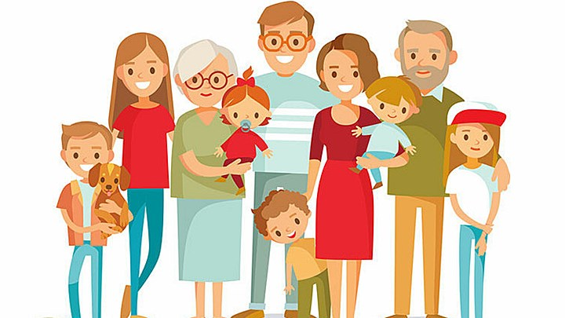

Trải qua nhiều thế hệ, gia đình Việt Nam được hình thành và phát triển với những chuẩn mực giá trị tốt đẹp góp phần xây dựng bản sắc văn hóa dân tộc. Những giá trị truyền thống quý báu như lòng yêu nước, yêu quê hương, yêu thương đùm bọc lẫn nhau, thủy chung, hiếu nghĩa, hiếu học, cần cù sáng tạo trong lao động, bất khuất, kiên cường vượt qua mọi khó khăn, thử thách đã được gia đình Việt Nam giữ gìn, vun đắp và phát huy trong suốt quá trình lịch sử dựng nước và giữ nước.
Qua nhiều thời kỳ phát triển, cấu trúc và quan hệ trong gia đình Việt Nam có những thay đổi, nhưng chức năng cơ bản của gia đình vẫn còn tồn tại và gia đình vẫn là một nhân tố quan trọng, không thể thiếu trong sự phát triển kinh tế - xã hội của đất nước. Ngày Gia đình Việt Nam là một sự kiện văn hóa lớn nhằm tôn vinh những giá trị văn hóa truyền thống của gia đình Việt Nam, là dịp để các gia đình giao lưu, chia sẻ kinh nghiệm xây dựng gia đình văn hóa, hướng tới sự phát triển bền vững của gia đình trong thời kỳ công nghiệp hóa, hiện đại hóa và hội nhập quốc tế. Đây cũng là ngày mọi người trong gia đình quan tâm đến nhau, xã hội quan tâm đến trẻ nhỏ và những người không có bố mẹ, cặp vợ chồng phải hiểu được giá trị mái ấm và cùng nhau vượt qua sóng gió để có một gia đình hạnh phúc.
Ngoài ra, ngày Gia đình Việt Nam còn là ngày để những con người đất Việt hướng về cội nguồn, về người thân, qua đó nuôi dưỡng những tình cảm đẹp, những giá trị văn hoá cao quý của dân tộc. Cho dù có đi đâu, làm gì, gia đình vẫn là nơi để nhớ, để yêu thương và để quay trở về.